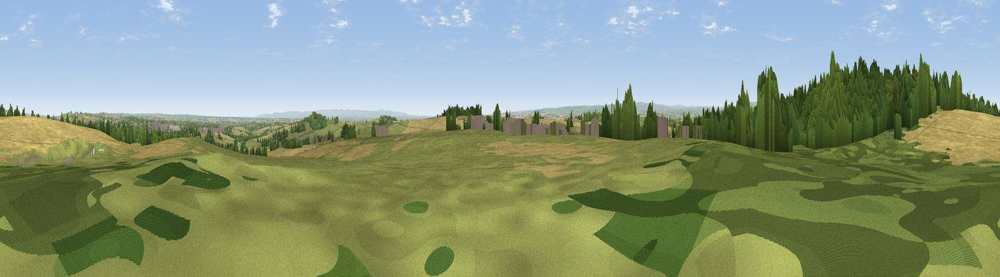

Viewpoint near Shildon
#9482 in England · top 15% of its area beats it · near ShildonWhere it is
The exact computed spot (NZ 20775 24225). Click the marker for map links.
The view, rendered

A 360° render of this exact spot computed from the terrain model, tree cover and land cover — summer colours, afternoon light, calibrated against photographs of famous viewpoints. Real trees, hedges and buildings will differ in detail.
The panorama
Grey silhouette: terrain skyline in each direction (720 bearings, Earth curvature and refraction included). Dashed green: skyline with trees (+15 m) and buildings (+8 m) as obstacles. Blue strip: how far the ground is visible on each bearing.
Where the view opens
Wedge length = distance to the farthest visible ground on that bearing (vegetation-aware). Rings at 10, 25 and 50 km.
What fills the view
40% cropland · 39% grassland · 18% woodland · 3% built-up
Angular shares of the visible panorama (visual magnitude), not map area. Landscape diversity 0.50 (0–1 Shannon).
Key numbers
More beautiful places nearby
The staircase of upgrades: each row has a higher view potential than everything closer. Driving times are estimates from straight-line distance, calibrated against real road routing — check an actual route before setting out.
| Place | Direction | Drive | Score |
|---|---|---|---|
| Viewpoint near St Helen Auckland | N · 1 km | ~3 min | 64.1 |
| Viewpoint near St Helen Auckland | NW · 1 km | ~3 min | 70.3 |
| Viewpoint near Quarrington Hill | NE · 18 km | ~32 min | 73.1 |
| Viewpoint near Eggleston | W · 19 km | ~33 min | 76.0 |
| Pontop Pike | N · 29 km | ~46 min | 77.8 |
| Viewpoint near Newton Under Roseberry | ESE · 34 km | ~52 min | 78.3 |
| Viewpoint near Ingleby Cross | SE · 35 km | ~53 min | 82.4 |
| Beacon Hill | SE · 35 km | ~53 min | 84.7 |
54.61276, -1.67985 · source: screening · position refined by local search. Computed location — check access rights before visiting.